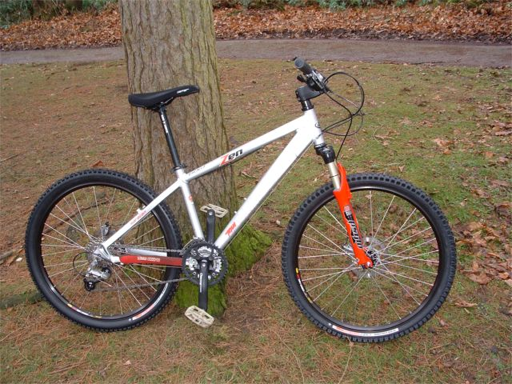
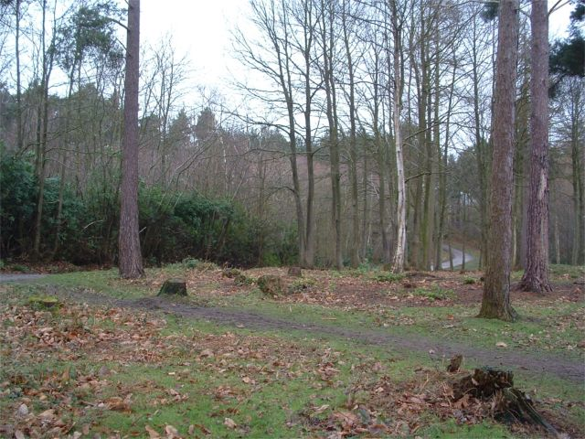
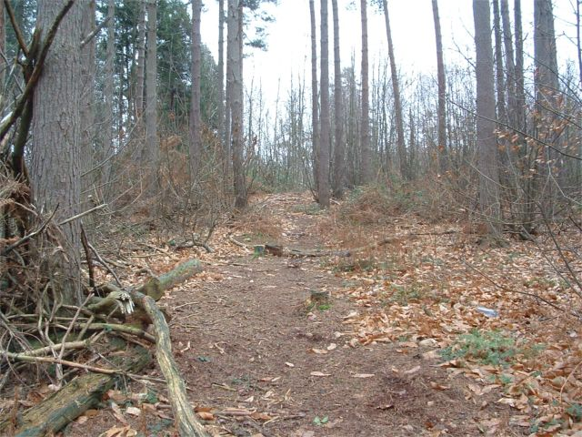
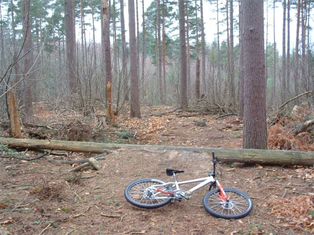
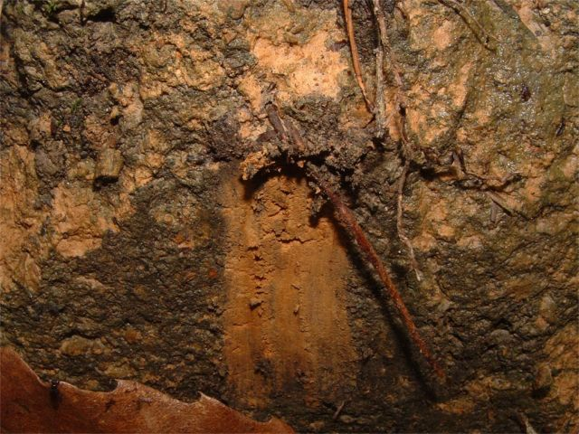
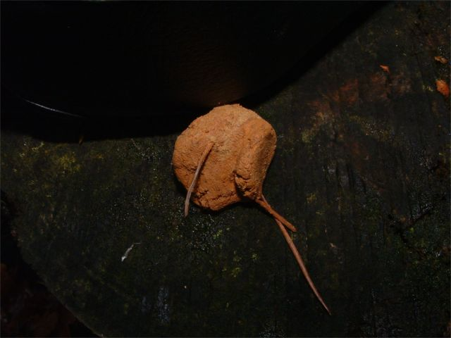
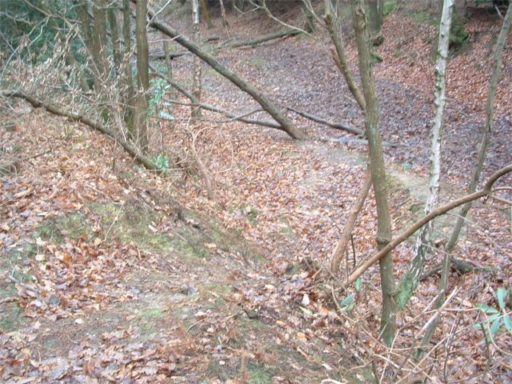
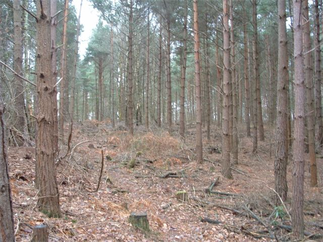
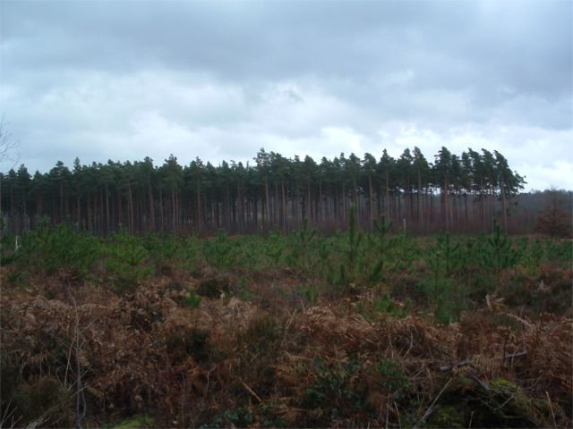
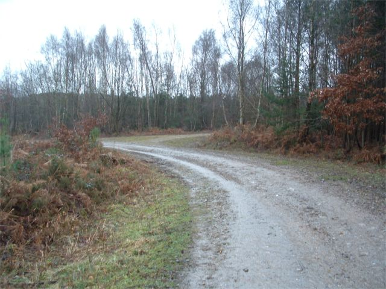

|
 Tim went on a mission to find a new place to build trails. This is his new bike. Reasons why this bike is gay: 1. Gears 2. Mountain bike 3. Disks 4. That's my lizard skin 5. Matching colour scheme 6. It's too clean 7. It's a Saracen 8. The saddle is high
No, that's a joke. We all have to have a mountain bike. They are fun
too you know. This is a good one too  View from the car park  Go for a little explore... what will we find... (this is the run up before..)  someone's already made a start. that'll do.  Nice sandy clay  yum yum  This is where we built jumps a long time ago. This is a drop in. At the bottom is a berm.  Another place you could build jumps. Very rooty though.  Nice view  Who knows. |